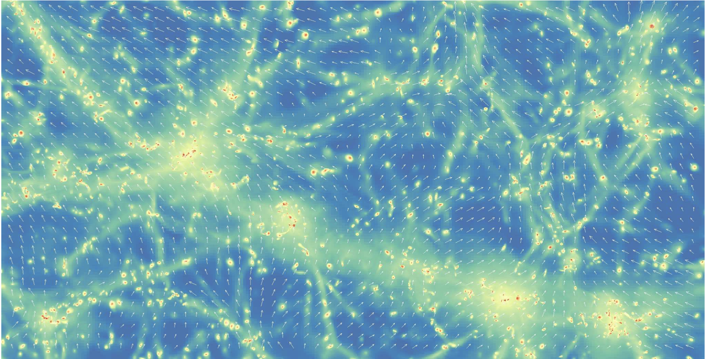

Research

My research focuses on the intrinsic alignments of galaxies in the Universe. Intrinsic alignment refers to the tendency of galaxies to align over very large scales along the filaments of the cosmic web, as a result of their interaction with the underlying tidal field of dark matter. It induces correlations between the shapes and orientations of galaxies across the sky, making it a powerful probe of the 3D properties of the large-scale structure of the Universe.
In the literature, intrinsic alignments have so far been measured from correlations between the 2D shapes of galaxies, which can be measured directly from their observed, projected images. However, part of the intrinsic alignment signal is lost in this 2D projection. The aim of my PhD thesis is to recover this information by analyzing correlations between the 3D shapes of galaxies, inferred from their projected images.
The scientific goal is to better understand the full 3D interaction between galaxies and the underlying dark matter environment in which they formed and evolved.